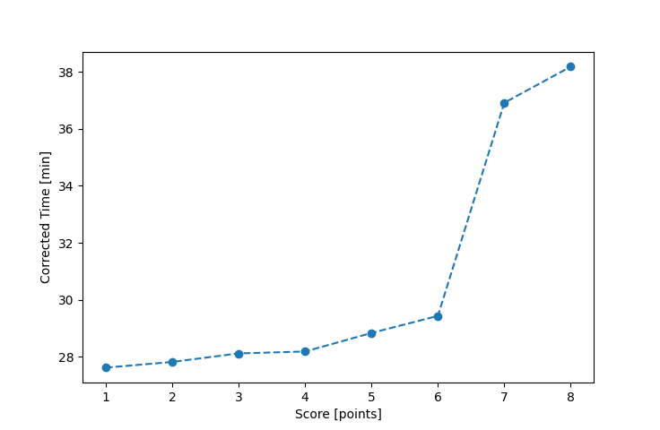

| Wind: | 2-3 (BFT) |
|---|---|
| RC: | Barry_OBill_P |
| Date: | June 07, 2020 |
| Notes: | M3 Starboard Rounding |
| Rank / Score | Name | Boat | Input Time [mm:ss] | Input Offset [mm:ss] | Race Time [mm:ss] | Race Time [s] | Handicap | Corrected Time [s] | Corrected Time [mm:ss] |
|---|---|---|---|---|---|---|---|---|---|
| 1.0 | Ron_F | F5 | 31:11 | 00:00 | 31:11 | 1871 | 0.96600 | 1937 | 32:17 |
| 2.0 | Rod_H | LASEM | 34:49 | 00:00 | 34:49 | 2089 | 0.97300 | 2147 | 35:47 |
| 3.0 | Mike_F | SF | 36:07 | 00:00 | 36:07 | 2167 | 1.00400 | 2158 | 35:58 |
| 4.0 | Jay_H | SWSX | 34:43 | 00:00 | 34:43 | 2083 | 0.95900 | 2172 | 36:12 |
| 5.0 | Nedra_F | SF | 36:30 | 00:00 | 36:30 | 2190 | 1.00400 | 2181 | 36:21 |
| 6.0 | Ian_O | SF | 37:16 | 00:00 | 37:16 | 2236 | 1.00400 | 2227 | 37:07 |
| 7.0 | Lewis_V | BCN | 33:44 | 00:00 | 33:44 | 2024 | 0.87000 | 2326 | 38:46 |
| 8.0 | Jim_S | SF | 45:37 | 00:00 | 45:37 | 2737 | 1.00400 | 2726 | 45:26 |
| 9.0 | Matt_L | DLPSR | 50:17 | 00:00 | 50:17 | 3017 | 1.08600 | 2778 | 46:18 |

Application Notes:
All race results are unofficial
View source code at https://github.com/cessnao3/portsmouthracecalc/